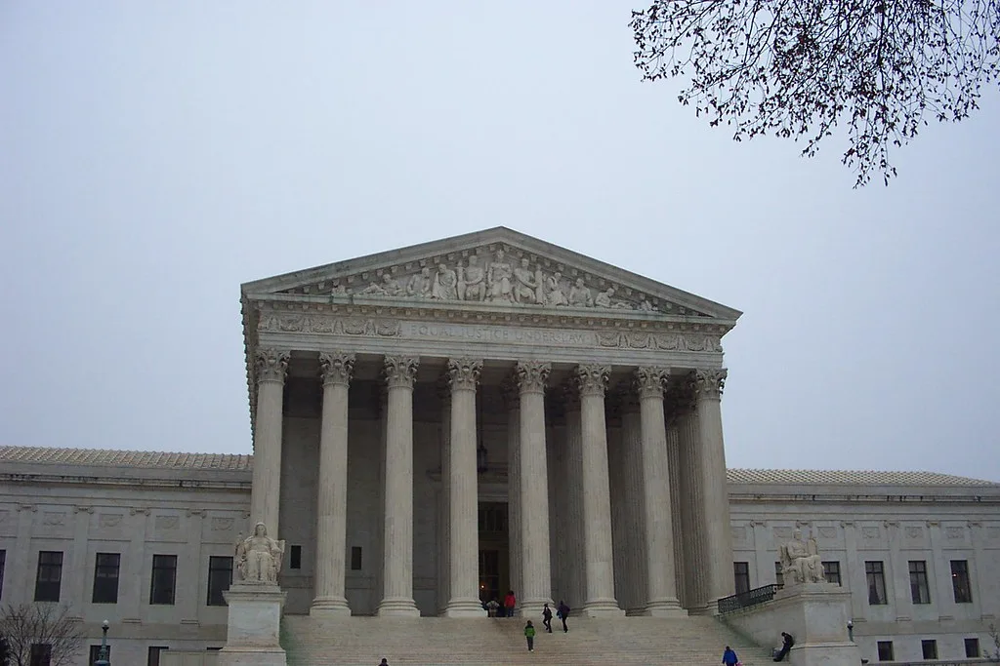

조희대 대법원장, 국감 증인 채택…與 주도 법사위 의결에 野 퇴장
국회 법제사법위원회가 조희대 대법원장을 다음 달 열리는 대법원 국정감사의 일반 증인으로 채택했다. 법사위는 전체회의를 열어 국정감사 증인·참고인 출석 요구의 건을 의결했으며, 이 명단에 조 대법원장이 포함됐다. 통상 대법원 국정감사에서는 대법원장이 인사말만 하고 자리를 뜨는 것이 오랜 관례였던 터라, 이번 증인 채택은 이례적인 조치로 받아들여지고 있다. 국회 안팎에서는 사법부 수장이 국감 증인석에 서는 장면 자체가 이례적이라는 평가가 나온다. 여야 간사 협의 없이 여당 단독으로 증인 명단을 확정한 것도 이번 의결의 이례적인 대목으로 꼽힌다.
이번 증인 채택은 조 대법원장이 청와대의 대법관 후보자 재제청 요구를 공개적으로 거부한 사건과 직접 맞닿아 있다. 앞서 조 대법원장은 노태악 전 대법관의 후임으로 손봉기 대구지법 부장판사를 이재명 대통령에게 임명 제청했으나, 청와대가 재검토를 요청하자 재제청에 나설 헌법적 근거나 사유가 없다는 입장을 밝히며 요구를 거부했다. 이 발언이 알려지면서 정치권에서는 삼권분립과 인사권 행사의 적절성을 둘러싼 논쟁이 빠르게 확산됐다. 여권에서는 헌법기관 간 협의 관행을 대법원장이 일방적으로 깼다고 비판하는 반면, 야권과 일부 법조계에서는 대법원장의 제청권이 헌법상 독립적인 권한이라는 반박을 내놓으며 맞서고 있다.
여당인 더불어민주당은 법사위 의결을 주도하며 조 대법원장의 재제청 거부 경위를 국정감사 자리에서 직접 따져 묻겠다는 의지를 분명히 했다. 민주당 의원들은 대법원장의 인사 관행이 헌법적 근거를 벗어난 것은 아닌지, 임명제청 절차 전반이 투명하게 이뤄졌는지를 국감에서 규명해야 한다고 주장했다. 반면 국민의힘은 이번 증인 채택이 사법부에 대한 부당한 압박이라며 강하게 반발했고, 의결 전 회의장에서 항의성 퇴장을 하는 등 강경 대응에 나섰다. 국민의힘 법사위원들은 회의장 밖에서 별도 규탄 성명을 발표하며 여당의 단독 처리를 절차적으로 문제 삼겠다는 뜻도 밝혔다.
조 대법원장은 이번 논란과 관련해 국정감사를 통해 입장을 밝히겠다는 뜻을 내비친 것으로 전해졌다. 그는 그동안 재제청 거부가 개인적 판단이 아니라 법과 원칙에 따른 결정이었다는 취지의 입장을 여러 차례 밝혀온 것으로 알려졌다. 법원행정처 역시 관련 절차가 통상적인 인사 검토 과정을 거쳤다는 설명을 내놓은 바 있어, 국감에서 여야가 이 부분을 놓고 정면으로 부딪힐 가능성이 크다.

법조계에서는 이번 사태가 사법부의 독립성과 국회의 견제 권한이 정면으로 충돌한 사례로 평가하는 시각도 있다. 대법원장에 대한 국감 증인 출석 요구 자체가 전례를 찾기 어려운 만큼, 이번 사안이 향후 사법부와 입법부 간 관계 설정에 하나의 선례로 남을 수 있다는 관측도 나온다. 일부 원로 법조인들은 정치권이 재제청 요구를 둘러싼 논란을 지나치게 정쟁화하고 있다며 우려의 목소리를 내기도 했다.
여야의 대립이 국정감사까지 이어지게 되면서, 대법원 국감 당일에는 조 대법원장의 증인 출석 여부와 발언 수위에 관심이 집중될 전망이다. 국민의힘은 증인 채택 자체에 대한 재의 요구 등 절차적 대응도 검토하고 있는 것으로 전해져, 국감 이전까지 관련 공방이 계속될 것으로 보인다.